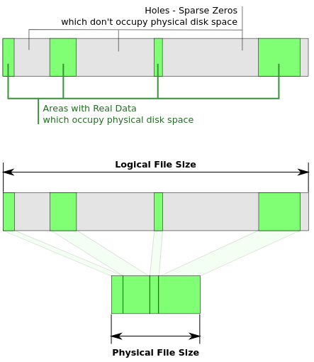

Linux上可以快速创建一个超过卷自身大小的文件。例如/dev/nvme0n1p2对应的大小只有234GB：╭─xuranus@Thanos ~/workspace
╰─$ df -h
Filesystem Size Used Avail Use% Mounted on
dev 7.8G 0 7.8G 0% /dev
run 7.8G 1.6M 7.8G 1% /run
/dev/nvme0n1p2 234G 196G 26G 89% /
tmpfs 7.8G 172M 7.6G 3% /dev/shm
tmpfs 7.8G 21M 7.8G 1% /tmp
/dev/nvme0n1p1 500M 114M 386M 23% /boot
tmpfs 1.6G 76K 1.6G 1% /run/user/1000
用dd if=/dev/zero bs=1M count=1 of=sparsefile seek=1000000以1MB为单位，从1000000的位置，即offset = 1M * 1000000处写入一个1M的数据块：╭─xuranus@Thanos ~/workspace
╰─$ dd if=/dev/zero bs=1M count=1 of=sparsefile seek=1000000
1+0 records in
1+0 records out
1048576 bytes (1.0 MB, 1.0 MiB) copied, 0.00405439 s, 259 MB/s
用ll -h可以看到文件空间占用达到了977GB：
╭─xuranus@Thanos ~/workspace |
这里的977GB是逻辑占用、即文件系统API会返回的文件大小，也是用户和应用程序感知到的文件大小。如果使用du -hs查看文件大小，可以看到依然占用1MB：╭─xuranus@Thanos ~/workspace
╰─$ du -hs sparsefile
1.0M sparsefile
这是因为du是按照占用block大小计算的，统计的是物理占用。
稀疏文件简介
这种物理占用和逻辑占用不一致的特殊文件就是稀疏文件（Sparse File）,又称“空洞文件”。稀疏文件需要特定文件系统的支持，例如NTFS、Ext4等就支持稀疏文件。
稀疏文件由文件系统记录实际分配的区间，应用程序调用常规的文件系统API读写文件时候不会感知到空洞的部分的存在。
没有分配的区间默认写0。实际分配的区间信息记录在文件的元数据中。一个稀疏文件会存在一个或多个没有分配实际空间的区间，这些默认以0填充的空间就是空洞（Hole）。

稀疏文件可以用于快速创建一个大文件。例如Linux的Samba的服务端在接受新文件的时候，会先创建对应大小的纯空洞文件。由于创建稀疏文件只需要修改文件对于的元数据块，这种操作几乎是立刻完成的。然后在后续的网络传输过程中逐渐分配实际空间并写入数据，这种方法会导致传输过程中文件逻辑占始终保持不变。
曾经被这种机制坑过：详见这篇《Samba拷贝文件的pre-allowcate机制》
在拷贝稀疏文件的过程中，如果目标文件系统也支持稀疏文件，就可以只拷贝实际分配的区间，这样将大大提高拷贝的效率。
此外很多指令对稀疏文件的复制都有优化，例如cp命令有一个针对稀疏文件拷贝优化的参数--spare=WHEN,WHEN的值为auto、always、never，默认为auto，如果设置为never则会自动填数据。
知道了稀疏文件的概念和用途，接下来就是要了解如何读写稀疏文件。由于稀疏文件的IO对应用程序不感知，这里所谓的读也就是获取实际的分配区间，写就是创建稀疏文件。接下来就Linux和Windows两个平台分别讨论。
Linux读写稀疏文件
Linux没有直接标记稀疏文件属性的字段，可以用if (st.st_blocks * st.st_blksize < st.st_size) { sparse-file } else { PROBABLY NOT SPARSE }粗略过滤稀疏文件。要明确探寻空洞是否存在得用lseek(fd, cur, SEEK_HOLE)。
lseek(fd, cur, SEEK_HOLE)返回以cur开始，下一个空洞的位置（查询失败返回-1）。反之同理，lseek(fd, cur, SEEK_DATA)返回下一个实际分配的位置。
先来复习一下
lseek的用法：lseek用于移动文件读写指针，并返回指针指向的便宜量，open后的文件读写指针默认指向为起始处0。lseek(fd, off, SEEK_SET)将文件指针指向off处，lseek(fd, off, SEEK_CUR)将指针指向当前位置+off个偏移位置处，lseek(fd, 0, SEEK_END)将指针指向文件末尾（一般用于获取文件的逻辑大小）。如果lseek使得当前指针指向超过了文件大小，继续写则会自动创造空洞（前提是该文件系统和Linux内核版本支持稀疏文件）。
查询稀疏文件分配区间
基于上述原理，以下代码用lseek获取所有实际分配的区间:
using SparseRangeResult = std::optional<std::vector<std::pair<uint64_t, uint64_t>>>;
/* Represent the range using [<offset, length>] */
SparseRangeResult QuerySparsePosixAllocateRanges(const std::string& path)
{
std::vector<std::pair<uint64_t, uint64_t>> ranges;
int fd = ::open(path.c_str() , O_RDONLY | O_NONBLOCK);
if (fd < 0) {
return std::nullopt;
}
off_t end = ::lseek(fd, 0, SEEK_END); /* offset at the end of file */
off_t hole = ::lseek(fd, 0, SEEK_HOLE); /* offset of first hole if exist */
off_t cur = 0, offset = 0 , len = 0; /* search from beginning */
while (cur < end) {
cur = ::lseek(fd, cur, SEEK_DATA); /* first allocated range beginning */
if (cur == -1 && errno == ENXIO) {
cur = end;
continue;
}
if (cur < 0) {
return std::nullopt; /* query failed */
}
offset = cur; /* offset point to the left border of data range */
cur = ::lseek(fd, cur, SEEK_HOLE); /* cur point to left border next hole */
if (cur < 0) {
return std::nullopt; /* query failed */
}
len = cur - offset;
ranges.emplace_back(offset, len);
}
return std::make_optional(ranges);
/* kernel not support sparse file */
return std::nullopt;
}
复制稀疏文件
拿到了实际分配区间后，执行稀疏文件拷贝的时候就可以按照区间描述的信息只拷贝实际分配的空间。
需要注意的是：lseek只移动指针，不写入。如果要创造空洞区域需要配合write一起进行。如果空洞出现了源文件末尾（例如dd if=/dev/zero bs=1M count=0 of=sparsefile seek=1000000可以构造出逻辑占用900多G但是实际大小0B的全是空洞的文件），此时lseek只能将指针移动到末尾，但write不能写入任何数据，于是不能在末尾按照预期制造空洞。
这时候就需要用ftruncate来拓展尾部空洞。ftruncate(fd, offset)会扩展或者截取文件长度。如果offset比文件长度长，则会在文件末尾补全空洞；如果比文件长度短，则会将文件截断至目标长度。
更好的选择是直接用ftruncate创建对应逻辑大小实际占用为0的完全空洞文件，再依次写入实际分配的区间数据，这也是拷贝稀疏文件常选用的方法。
基于上述方法，Linux下拷贝稀疏文件的代码如下：
|
Windows读写稀疏文件
Windows文件系统有标记稀疏文件属性的字段，只需要判断文件属性dwFileAttributes是否有FILE_ATTRIBUTE_SPARSE_FILE位即可。具有FILE_ATTRIBUTE_SPARSE_FILE属性的文件只是支持了稀疏文件，但不一定意味着这个文件就含有空洞。Windows官方提供了检测稀疏文件的样例程序，使用DeviceIoControl指定FSCTL_QUERY_ALLOCATED_RANGES就可以获取稀疏文件的实际分配区间。
Windows稀疏文件详见这篇：Sparse File Operations
创建稀疏文件
Windows稀疏文件写入和Linux类似，都是基于“移动文件指针超出文件大小，制造空洞区域”来创建稀疏文件。区别是：Windows下写入稀疏文件前需要显式声明该文件是一个稀疏文件，而Linux下会根据文件系统是否支持稀疏文件自动选择创建空洞还是分配实际空间。
Windows下声明文件是稀疏文件就是设置文件FILE_ATTRIBUTE_SPARSE_FILE属性的过程。需要用DeviceIoControl和FSCTL_SET_SPARSE设置文件稀疏属性。如果设置成功，在文件当前指针偏移量超出文件大小时写数据就会产生空洞，反之则是分配实际的空间并写0。
类似于Linux的lseek()，Windows下使用SetFilePointerEx()设置文件当前读写指针。SetFilePointerEx()是SetFilePointer()的扩展版本，可以设置4GB以上的偏移量。SetEndOfFile()可以将当前指针指向的位置设置为文件末尾，结合SetFilePointerEx()可以实现Linux下ftruncate()的效果。
依据这些API可以先创建出一个稀疏文件C:\Test\sparsefile，该稀疏文件逻辑占用100MB，在10MB ~ 30MB, 50MB ~ 80MB上有实际的空间分配，创建代码如下：int wmain(int argc, WCHAR** argv)
{
std::wstring wPath = LR"(C:\Test\sparsefile)";
DWORD nWritten = 0;
DWORD dwTemp = 0;
// open file for write
HANDLE hOutFile = ::CreateFileW(wPath.c_str(),
GENERIC_WRITE,
FILE_SHARE_READ | FILE_SHARE_WRITE,
nullptr,
CREATE_NEW,
0,
nullptr);
if (hOutFile == INVALID_HANDLE_VALUE) {
return -1;
}
// set sparse flag
::DeviceIoControl(hOutFile,
FSCTL_SET_SPARSE,
nullptr,
0,
nullptr,
0,
&dwTemp,
nullptr);
// write data
LARGE_INTEGER sizeEx;
sizeEx.QuadPart = 1024 * 1024 * 100; // 100MB
// truncate a file size 100MB
::SetFilePointerEx(hOutFile, sizeEx, nullptr, FILE_BEGIN);
::SetEndOfFile(hOutFile);
// write 20MB at offset 10MB
char buff[1024] = {'a'};
LARGE_INTEGER offsetEx;
offsetEx.QuadPart = 1024 * 1024 * 20;
::SetFilePointerEx(hOutFile, offsetEx, nullptr, FILE_BEGIN);
for (int i = 0; i < 10 * 1024; i++) {
::WriteFile(hOutFile, buff, sizeof(buff), &nWritten, nullptr);
}
// write 30MB at offset 50MB
offsetEx.QuadPart = 1024 * 1024 * 50;
::SetFilePointerEx(hOutFile, offsetEx, nullptr, FILE_BEGIN);
for (int i = 0; i < 30 * 1024; i++) {
::WriteFile(hOutFile, buff, sizeof(buff), &nWritten, nullptr);
}
// alloc range: 10MB ~ 30MB, 50MB ~ 80MB
return -1;
}
查询稀疏文件分配区间
Windows查询稀疏文件分配区间和Linux不太一样，Windows不提供SEEK_HOLE，而是使用指定的Windows API。DeviceIoControl()结合FSCTL_QUERY_ALLOCATED_RANGES可以查询指定文件的实际分配区间，代码如下：SparseRangeResult QuerySparseWin32AllocateRangesW(const std::wstring& wPath)
{
std::vector<std::pair<uint64_t, uint64_t>> ranges;
/* Open the file for read */
HANDLE hFile = ::CreateFileW(
wPath.c_str(),
GENERIC_READ,
0,
nullptr,
OPEN_EXISTING,
FILE_ATTRIBUTE_NORMAL,
nullptr);
if (hFile == INVALID_HANDLE_VALUE) {
return std::nullopt;
}
LARGE_INTEGER liFileSize;
GetFileSizeEx(hFile, &liFileSize);
/* Range to be examined (the whole file) */
FILE_ALLOCATED_RANGE_BUFFER queryRange;
queryRange.FileOffset.QuadPart = 0;
queryRange.Length = liFileSize;
/* Allocated areas info */
FILE_ALLOCATED_RANGE_BUFFER allocRanges[1024];
DWORD nbytes;
bool fFinished;
do
{
fFinished = DeviceIoControl(
hFile,
FSCTL_QUERY_ALLOCATED_RANGES,
&queryRange,
sizeof(queryRange),
allocRanges,
sizeof(allocRanges),
&nbytes,
nullptr);
if (!fFinished) {
DWORD dwError = GetLastError();
/* ERROR_MORE_DATA is the only error that is normal */
if (dwError != ERROR_MORE_DATA) {
::CloseHandle(hFile);
return std::nullopt;
}
}
/* Calculate the number of records returned */
DWORD dwAllocRangeCount = nbytes / sizeof(FILE_ALLOCATED_RANGE_BUFFER);
/* Print each allocated range */
for (int i = 0; i < dwAllocRangeCount; i++) {
ranges.emplace_back(allocRanges[i].FileOffset.QuadPart, allocRanges[i].Length.QuadPart);
}
// Set starting address and size for the next query
if (!fFinished && dwAllocRangeCount > 0)
{
queryRange.FileOffset.QuadPart =
allocRanges[dwAllocRangeCount - 1].FileOffset.QuadPart +
allocRanges[dwAllocRangeCount - 1].Length.QuadPart;
queryRange.Length.QuadPart = liFileSize.QuadPart - queryRange.FileOffset.QuadPart;
}
} while (!fFinished);
::CloseHandle(hFile);
return std::make_optional(ranges);
}
复制稀疏文件
最后是Windows下稀疏文件的拷贝流程，基于之前提到的API，可以写出和Linux下稀疏文件类似的拷贝流程：/*
* Represent the range using [<offset, length>] in bytes
* Exmple from:
* https://github.com/microsoft/cpprestsdk/blob/master/Release/tests/functional/streams/CppSparseFile.cpp
*/
bool CopySparseFileWin32W(const std::wstring& wSrcPath, const std::wstring& wDstPath,
const std::vector<std::pair<uint64_t, uint64_t>>& ranges)
{
const int DEFAULT_BUFF_SIZE = 1024;
char buff[DEFAULT_BUFF_SIZE] = "\0";
/* open file for read */
HANDLE hInFile = ::CreateFileW(wSrcPath.c_str(),
GENERIC_READ,
FILE_SHARE_READ,
nullptr,
OPEN_EXISTING,
0,
nullptr);
if (hInFile == INVALID_HANDLE_VALUE) {
return false;
}
/* open file for write */
HANDLE hOutFile = ::CreateFileW(wDstPath.c_str(),
GENERIC_WRITE,
FILE_SHARE_READ | FILE_SHARE_WRITE,
nullptr,
CREATE_NEW,
0,
nullptr);
if (hOutFile == INVALID_HANDLE_VALUE) {
::CloseHandle(hInFile);
return false;
}
/* set taget file sparse */
DWORD dwTemp; /* store the setted attribute */
::DeviceIoControl(hOutFile,
FSCTL_SET_SPARSE,
nullptr,
0,
nullptr,
0,
&dwTemp,
nullptr);
/* truncate target file at first */
LARGE_INTEGER sizeEx;
if (!::GetFileSizeEx(hInFile, &sizeEx)) {
::CloseHandle(hInFile);
return false;
}
::SetFilePointerEx(hOutFile, sizeEx, nullptr, FILE_BEGIN);
::SetEndOfFile(hOutFile);
/* write allocated range */
for (const std::pair<uint64_t, uint64_t>& range : ranges) {
uint64_t offset = range.first;
uint64_t len = range.second;
sizeEx.QuadPart = offset;
do {
int nbytes = 0; /* n bytes to copy in this batch */
::SetFilePointerEx(hInFile, sizeEx, nullptr, FILE_BEGIN); /* set fd to the beginning of the range */
::SetFilePointerEx(hOutFile, sizeEx, nullptr, FILE_BEGIN);
nbytes = len < sizeof(buff) ? len: sizeof(buff); /* if the range can be copied in this batch */
if (!::ReadFile(hInFile, buff, nbytes, nullptr, nullptr)) {
/* read failed */
::CloseHandle(hInFile);
::CloseHandle(hOutFile);
return false;
}
DWORD nWritten = 0;
if (!::WriteFile(hOutFile, buff, nbytes, &nWritten, nullptr)) {
/* write failed */
::CloseHandle(hInFile);
::CloseHandle(hOutFile);
return false;
}
offset = offset + nbytes; /* reset offset and length */
len = len - nbytes;
} while (len != 0);
}
/* copy success */
::CloseHandle(hInFile);
::CloseHandle(hOutFile);
return true;
}
本文涉及的代码可以在https://github.com/XUranus/FileSystemUtil仓库中找到。该仓库提供fsutil.exe -sparse <filepath>来查询稀疏文件的分配区间：
C:\Users\XUranus\source\repos\FileSystemUtil\build>Debug\fsutil.exe -sparse C:\Test\sparsefile |